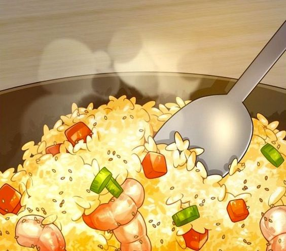

Stir Fry

One of the best meals to cook, especially for its balance of flavor and ease, is a stir-fry. A classic chicken and vegetable stir-fry is not only quick but also healthy. Begin by sautéing bite-sized pieces of chicken breast until golden, then add a colorful mix of vegetables like bell peppers, broccoli, and carrots. Cook until tender-crisp, ensuring the vegetables retain their vibrant color and crunch. Toss everything in a simple soy sauce-based mixture with garlic, ginger, and a dash of sesame oil. Serve this over a bed of steamed rice or noodles. The beauty of a stir-fry lies in its versatility—whether you're clearing out the fridge or experimenting with new flavors, it's a meal that can be adapted to suit any palate.